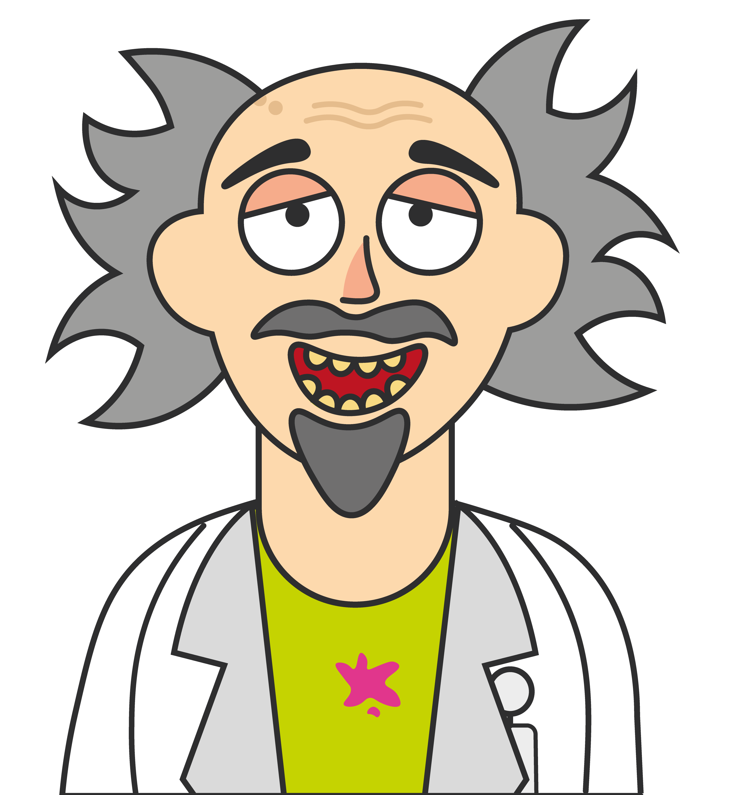
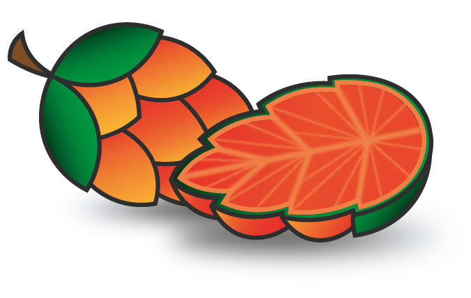

OVER MIJ
Haidieho fans,
Leuk dat jullie hier op mijn pagina komen! Ik heb namelijk veel te vertellen. Op het moment ben ik bezig met mijn eigen speciaal bier op de markt te brengen.
Tijdens dit proces kwam ik 3 studenten tegen die mij wellicht wel verder konden helpen genaamd Daan, Davey en Mila. Deze 3 studenten volgen de Minor Ondernemerschap aan de HvA en konden mij precies helpen. Terwijl ik de belangrijke taak doe van het bier maken, regelen zij de klusjes van de verkoop, marketing en alle andere mikmak die bij een onderneming hoort. Zodat ik mij kan focussen op het aller lekkerste biertje te maken.
Op het moment werk ik samen met een andere hele slimme professor in het bier vak van brouwerij Artemis, een hele slimme gast die heel veel van bier af weer (en heeft ook de spullen hiervoor). Wil je meer van mijn proces te weten krijgen neem dan een kijkje op mijn Instagram pagina hier laat ik al mijn bevindingen weten aan mijn fans.
Over en uit!

DE BERDIDAS VRUCHT
Het experiment zit nu officieel in de een na laatste fase, de vrucht is hier! Na jaren onderzoek hebben alle experimenten nu eindelijk zijn vruchten afgeworpen. De perfecte vrucht voor het perfecte bier. Met testen van plant kruisingen en het kweken van het ideale soort bereik je nu dan toch het beste resultaat. Berdidas is de naam! Berdidas staat voor: Berijpt, Divine, Daslook vrucht. De naam die de wereld doet schokken. Bier is een passie van mij en ik heb gestreden om het lekkerste biertje te maken. Met trots kan ik zeggen dat dit biertje een wetenschappelijk bewezen lekker biertje wordt. Natuurlijk wil jij mij volgen in mijn avontuur. Volg ons dan nu op mijn logboek genaamd instagram!
Volg hier mijn logboek!
